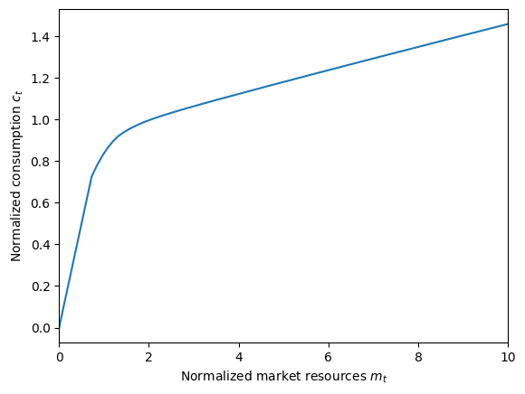
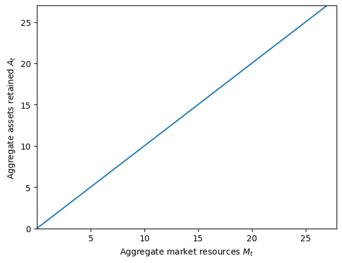
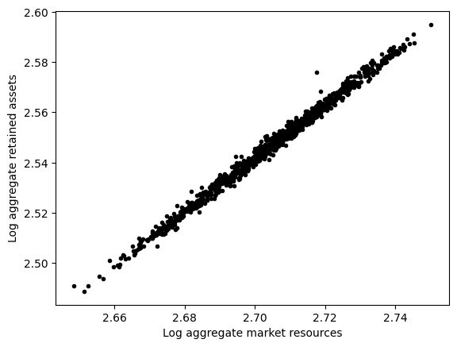
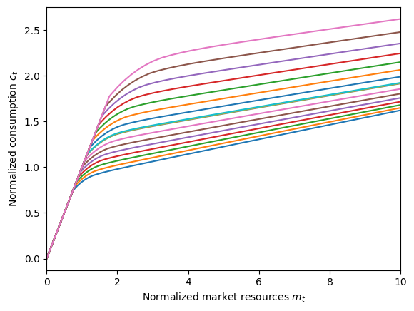

Interactive online version:
Aggregate Productivity Shocks#
[1]:
from time import time
import matplotlib.pyplot as plt
import numpy as np
from HARK.ConsumptionSaving.ConsAggShockModel import (
AggShockConsumerType,
CobbDouglasEconomy,
SmallOpenEconomy,
)
from HARK.utilities import plot_funcs, plot_func_slices
def mystr(number):
return f"{number:.4f}"
Most AgentType subclasses in HARK are fully “microeconomic” models in the sense that they concern the decisions of agents under uncertainty, but with no economy-wide interaction among the agents. In particular, objects like the return factor on retained assets are treated as exogenous, and we often omit the wage rate entirely (implicitly normalizing it to 1).
The AgentType subclasses in ConsAggShockModel, in contrast, are designed to be used with subclasses of Market and solved in dynamic stochastic general equilibrium (DSGE), or more accurately HA-DSGE. For a primer on the Market class generally, see the notebook here.
This notebook concerns AggShockConsumerType, representing agents in the canonical consumption-saving framework with labor income risk. Unlike other AgentType subclasses that face only idiosyncratic income shocks, AggShockConsumerTypes are also subject to aggregate productivity shocks, both permanent and transitory. Moreover, these agents can be embedded in a CobbDouglasEconomy in which the interest and wage factors are determined endogenously based on the ratio of aggregate
labor and capital.
Microeconomic Model Statement for AggShockConsumerType#
AggShockConsumerType extends IndShockConsumerType by incorporating a second continuous state variable (aggregate market resources \(M_t\)) as well as two additional shocks: permanent \(\Psi\) and transitory \(\Theta\) shocks to aggregate productivity. Because some objects are idiosyncratic (varying across individuals) and others are aggregate, we explicitly include the \(i\) subscript to indicate idiosyncratic values.
\begin{eqnarray*} \text{v}(m_{it}, M_t) &=& \max_{c_{it}} \frac{c_{it}^{1-\rho}}{1-\rho} + \beta \mathsf{S} \mathbb{E} \left[ (\psi_{it+1} \Psi_{t+1})^{1-\rho} \text{v}(m_{it+1}, M_{t+1}) \right] \\ &\text{s.t.}& \\ a_{it} &=& m_{it} - c_{it} \geq \underline{a}, \\ A_{t} &=& \mathbf{A}(M_{it}), \\ K_{t+1} &=& A_t, \\ k_{t+1} &=& K_t / \Psi_{t+1}, \\ \mathsf{R}_{t+1} &=& \mathbf{R}(k_{t+1} / \Theta_{t+1}), \\ \mathsf{w}_{t+1} &=& \mathbf{W}(k_{t+1} / \Theta_{t+1}), \\ m_{it+1} &=& \mathsf{R}_{t+1} a_{t} / (\psi_{it+1} \Psi_{t+1}) + \mathsf{w}_{t+1} \theta_{it+1} \Theta_{t+1}, \\ M_{t+1} &=& \mathsf{R}_{t+1} k_{t+1} + \mathsf{w}_{t+1} \Theta_{t+1}, \\ (\psi_{it+1}, \theta_{it+1}) &\sim& F, \\ (\Psi_{t+1}, \theta_{t+1}) &\sim& \Phi. \end{eqnarray*}
Much of this model is identical to the workhorse IndShockConsumerType model, but with substantial additions and changes. Capitalized and serifed variables represent aggregate normalized variables; e.g. \(M_t\) is aggregate market resources normalized by aggregate permanent productivity.
Aggregate capital next period \(K_{t+1}\) is simply aggregate retained assets \(A_t\). The aggregate productivity shocks \((\Psi, \Theta)\) are assumed to affect effective labor, which is inelastically supplied. The ratio of aggregate capital to aggregate permanent labor productivity is thus denoted as \(k_t\).
The interest \(\mathsf{R}\) and wage \(\mathsf{w}\) factors are determined as functions of the aggregate capital-to-labor ratio (incorporating the transitory aggregate shock as well). At both the individual and aggregate level, next period’s market resources are the sum of capital and labor income.
We denote the aggregate productivity shock distribution as \(\Phi\), which does not stand for the standard normal distribution.
Model Statement for a CobbDouglasEconomy#
A careful reader will notice that we have not specified how the aggregate capital-to-labor ratio determines the interest factor and wage rate. Moreover, we also did not mention the aggregate savings function \(\mathbf{A}(M_t)\) at all. This was intentional, because there are (at least) two possibilities. An AggShockConsumerType instance can’t be meaningfully solved outside of some Market that it lives in, and how aggregate capital and labor determine factor prices is an activity at
the Market-level.
An instance of CobbDouglasEconomy, a subclass of Market represents an economy in which capital and labor are used to produce output with a Cobb-Douglas technology, and factor prices are determined competitively via the marginal product of each factor. We denote capital’s share of production CapShare as \(\alpha\) and the depreciation rate of capital DeprRte as \(\delta\).
The interest factor and wage rate can thus be determined from aggregate capital and labor as follows:
\begin{eqnarray*} Y &=& K^\alpha L^{1-\alpha}, \\ \mathsf{w} &=& \frac{\partial Y}{\partial L} = (1-\alpha) K^\alpha L^{-\alpha} = (1-\alpha) k^{\alpha}, \\ \mathsf{r} &=& \frac{\partial Y}{\partial K} = \alpha K_{t}^{\alpha-1} L_t^{1-\alpha} = \alpha k^{1-\alpha}, \\ \mathsf{R} &=& 1 - \delta + \mathsf{r}. \end{eqnarray*}
In the last line, the return factor on capital represents the individual retaining their capital, less depreciation, and being paid the gross interest rate \(\mathsf{r}\) for it. These expressions are used as the functional forms for \(\mathbf{R}\) and \(\mathbf{W}\) above.
Following Krusell & Smith (1998), we parameterize the aggregate saving function \(\mathbf{A}(M_{it})\) as linear in logs:
\begin{equation*} A_{it} = \mathbf{A}(M_{it}) = \exp(\kappa_1 \log(M_{it}) + \kappa_0). \end{equation*}
This function represents the agents’ parameterized beliefs about aggregate behavior, rather than true dynamics. It is used by agents when solving their microeconomic model to form expectations about future resources (through factor prices), representing a form of bounded rationality: future factor prices depend on all consumers’ financial position, but the agents only account for the aggregate quantity when making their projection, and then only with a parametric relationship.
The microeconomic model can be solved for any such subjective beliefs, but the goal of solving the model in general equilibrium is to find beliefs that are consistent: if agents’ act optimally given those beliefs about aggregate saving, then the relationship between \(M_{t}\) and \(A_{t}\) that emerges in the long run is well approximated by those same beliefs.
In the terminology of HARK’s Market class, the only element of dyn_vars is AFunc, the aggregate saving function, which is characterized by the two coefficients \(\kappa_0\) and \(\kappa_1\). When a CobbDouglasEconomy instance has its solve method invoked, it executes the following in a loop:
Begin with arbitrary initial \(\kappa_0\) and \(\kappa_1\)
Agents solve their microeconomic model given beliefs
Simulate market for many periods, generating history of \((M_t, A_t)\)
Linearly regress \(\log A_t\) on \(\log M_t\) to generate new \(\kappa_0\) and \(\kappa_1\)
If new coefficients are not sufficiently close to old ones, go to step 1
During the simulation, the agents observe the true \(M_t\) in each period. Their subjective beliefs are used only when solving the model, not when simulating it.
Keeping it Simple: SmallOpenEconomy#
As an alternative to CobbDouglasEconomy, you might instead be interested in an environment in which factor prices do not fluctuate with aggregate capital and labor (say, because capital is mobile and thus prices are determined by global factors), but there are still aggregate productivity shocks. HARK handles this with the SmallOpenEconomy subclass of Market.
The mechanics of a SmallOpenEconomy are simple: the user provides a fixed Rfree and wRte (as well as the AggShkDstn) and the functions \(\mathbf{R}(\cdot)\) and \(\mathbf{W}(\cdot)\) are specified as ConstantFunctions with those values. The aggregate saving function \(\mathbf{A}(M_t)\) is irrelevant because the agents know that their future state does not depend on the aggregate state at all; it’s arbitrarily specified as the identity function. With a
SmallOpenEconomy, the agents’ microeconomic problem thus only needs to be solved once, rather than iterated on to find equilibrium beliefs about aggregate saving.
Put differently, the structure of the microeconomic problem is identical whether CobbDouglasEconomy or SmallOpenEconomy is used, but some details are simplified and trivialized under the latter.
Example parameter values for AggShockConsumerType#
Like other AgentType subclasses, AggShockConsumerType includes a complete set of default parameters and constructors, so it can be instantiated without any additional arguments. The table below lists the default parameter values.
Parameter |
Description |
Code |
Value |
Time-varying? |
|---|---|---|---|---|
\(\beta\) |
Intertemporal discount factor |
|
\(0.96\) |
|
\(\rho\) |
Coefficient of relative risk aversion |
|
\(2.0\) |
|
\(\mathsf{S}_t\) |
Survival probability |
|
\([0.98]\) |
\(\surd\) |
\(\Gamma_{t}\) |
Permanent income growth factor |
|
\([1.0]\) |
\(\surd\) |
\(\underline{a}\) |
Artificial borrowing constraint (normalized) |
|
\(0.0\) |
|
\(\sigma_\psi\) |
Standard deviation of log permanent income shocks |
|
\([0.1]\) |
\(\surd\) |
\(N_\psi\) |
Number of discrete permanent income shocks |
|
\(7\) |
|
\(\sigma_\theta\) |
Standard deviation of log transitory income shocks |
|
\([0.1]\) |
\(\surd\) |
\(N_\theta\) |
Number of discrete transitory income shocks |
|
\(7\) |
|
\(\mho\) |
Probability of being unemployed and getting \(\theta=\underline{\theta}\) |
|
\(0.05\) |
|
\(\underline{\theta}\) |
Transitory shock when unemployed |
|
\(0.3\) |
|
\(\mho^{Ret}\) |
Probability of being “unemployed” when retired |
|
\(0.0005\) |
|
\(\underline{\theta}^{Ret}\) |
Transitory shock when “unemployed” and retired |
|
\(0.0\) |
|
\((none)\) |
Period of the lifecycle model when retirement begins |
|
\(0\) |
|
\((none)\) |
Minimum value in assets-above-minimum grid |
|
\(0.001\) |
|
\((none)\) |
Maximum value in assets-above-minimum grid |
|
\(20.0\) |
|
\((none)\) |
Number of points in base assets-above-minimum grid |
|
\(36\) |
|
\((none)\) |
Exponential nesting factor for base assets-above-minimum grid |
|
\(2\) |
|
\((none)\) |
Additional values to add to assets-above-minimum grid |
|
\(None\) |
|
\((none)\) |
Number of aggregate \(M_t\) gridpoints to use |
|
\(17\) |
|
\((none)\) |
Base perturbation factor around perfect foresight steady state for grid of \(M_t\) |
|
\(0.01\) |
|
\((none)\) |
Log scaling factor for additional \(M_t\) gridpoints |
|
\(0.15\) |
This model is usually used with a standard infinite horizon setup, but the time-varying capabilities are maintained for compatibility across AgentType subclasses.
The last three parameters are used to specify the base scaling for the aggregate market resources grid. An AggShockConsumerType can build the base for the grid (centered around 1), but needs to be paired with a CobbDouglasEconomy (or SmallOpenEconomy) to properly rescale the grid around the perfect foresight steady state level– around where the market will actually be operating.
Example parameter values for a CobbDouglasEconomy#
Some parameters in this model are specified in the Market subclass, rather than at the AgentType level. The CobbDouglasEconomy has the following default parameters:
Parameter |
Description |
Code |
Value |
|---|---|---|---|
\(\delta\) |
Capital depreciation rate |
|
\(0.025\) |
\(\alpha\) |
Capital’s share of production |
|
\(0.36\) |
\(\beta\) |
Intertemporal discount factor (perfect foresight calibration) |
|
\(0.96\) |
\(\rho\) |
Coefficient of relative risk aversion (perfect foresight calibration) |
|
\(2.0\) |
\(\gimel\) |
Aggregate permanent growth factor |
|
\(1.0\) |
\(\Psi_N\) |
Number of discrete aggregate permanent productivity shocks |
|
\(3\) |
\(\Theta_N\) |
Number of discrete aggregate transitory productivity shocks |
|
\(3\) |
\(\sigma_\Psi\) |
Standard deviation of log aggregate permanent productivity shocks |
|
\(0.0063\) |
\(\sigma_\Theta\) |
Standard deviation of log aggregate permanent productivity shocks |
|
\(0.0031\) |
(none) |
Number of “burn in” periods to discard at start of simulation run when updating \(mathbf{A}(\cdot)\) |
|
\(200\) |
(none) |
Damping factor when updating \(\mathbf{A}(\cdot)\) (weight on prior value) |
|
\(0.2\) |
(none) |
Maximum number of times to update \(\mathbf{A}(\cdot)\) before terminating |
|
\(20\) |
\(\kappa_0\) |
Initial guess for intercept \(\kappa_0\), intercept term in \(\mathbf{A}(\cdot)\) |
|
\(0.0\) |
\(\kappa_1\) |
Initial guess for intercept \(\kappa_1\), slope coefficient for \(\mathbf{A}(\cdot)\) |
|
\(1.0\) |
(none) |
Whether to print progress to screen when solving for equilibrium \(\mathbf{A}(\cdot)\) |
|
\(False\) |
The values of \(\beta\) and \(\rho\) provided to the CobbDouglasEconomy do not need to be the same values as the agents who populate the market. The market-level parameters are used only to calculate what the perfect foresight steady state level of aggregate market resources would be; this is used to scale the grid of \(M_t\) values to an appropriate range around it.
Example parameters for a SmallOpenEconomy#
The parameters for a SmallOpenEconomy are similar to the CobbDouglasEconomy, but not quite the same. Most obviously, “technology” parameters like \(\delta\) and \(\alpha\) are irrelevant, as are parameters governing how \(\mathbf{A}(\cdot)\) is updated. Moreover, the perfect foresight \(\beta\) and \(\rho\) likewise do not appear, because market resources \(M_t\) are a “dummy” state with no affect on the agent, so the scaling for the state grid doesn’t matter. The
initial guesses for \(\kappa_0\) and \(\kappa_1\) are also arbitrary and has no effect; they just need to exist.
On the other hand, the exogenous factor prices \(\mathsf{R}\) and \(\mathsf{w}\) are specified as parameters of a SmallOpenEconomy.
Parameter |
Description |
Code |
Value |
|---|---|---|---|
\(\mathsf{R}\) |
Exogenous risk-free interest factor |
|
\(1.02\) |
\(\mathsf{w}\) |
Exogenous wage rate |
|
\(1.0\) |
\(\gimel\) |
Aggregate permanent growth factor |
|
\(1.0\) |
\(\Psi_N\) |
Number of discrete aggregate permanent productivity shocks |
|
\(3\) |
\(\Theta_N\) |
Number of discrete aggregate transitory productivity shocks |
|
\(3\) |
\(\sigma_\Psi\) |
Standard deviation of log aggregate permanent productivity shocks |
|
\(0.0063\) |
\(\sigma_\Theta\) |
Standard deviation of log aggregate permanent productivity shocks |
|
\(0.0031\) |
(none) |
Maximum number of times to solve the micro model (always 1) |
|
\(1\) |
\(\kappa_0\) |
Initial guess for intercept \(\kappa_0\), intercept term in \(\mathbf{A}(\cdot)\) |
|
\(0.0\) |
\(\kappa_1\) |
Initial guess for intercept \(\kappa_1\), slope coefficient for \(\mathbf{A}(\cdot)\) |
|
\(1.0\) |
Example implementations of AggShockConsumerType#
We present two examples below, each using (more or less) the default parameters. Note that in each case, a Market is created alongside the AgentType, and the model is only only fully specified when the two things are paired together.
Small open economy example#
First, let’s make an AggShockShockConsumerType that lives in a SmallOpenEconomy, so that the interest factor and wage rate are exogenously determined, but the agents are aware of aggregate productivity shocks. Because the \(M_t\) state is irrelevant, we can set its grid to be (nearly) trivial, with only three nodes. The consumption function will be identical at all three \(M_t\) values on the grid, and is completely flat with respect to \(M_t\).
This model solves in only a few seconds because it just needs to solve the microeconomic model once, rather than iterate on solving, simulating, and updating the aggregate saving rule until convergence.
[2]:
# Make agents and a small open economy for the them
SOEaggShockType = AggShockConsumerType(cycles=0, MaggCount=3)
SOEmarket = SmallOpenEconomy(agents=[SOEaggShockType])
SOEmarket.make_AggShkHist() # Simulate a history of aggregate shocks
SOEmarket.give_agent_params() # Have agents collect market-level parameters and construct themselves
[3]:
# Solve the small open economy with the default parameters
t_start = time()
SOEmarket.solve()
t_end = time()
print(
"Solving a small open economy took " + mystr(t_end - t_start) + " seconds.",
)
Solving a small open economy took 10.9705 seconds.
With the model solved, we can plot the consumption function. Because the \(M_t\) state is irrelevant, we need only plot it at one value of \(M_t\) (specified as Z=[1.0] in the cell below).
[4]:
SOEaggShockType.unpack("cFunc")
plt.xlabel(r"Normalized market resources $m_t$")
plt.ylabel(r"Normalized consumption $c_t$")
plot_func_slices(SOEaggShockType.cFunc[0], 0.0, 10.0, Z=[1.0])
plt.show()

Example Cobb-Douglas production economy#
Now we’ll make another AggShockConsumerType instance, but this one will live in a CobbDouglasEconomy. To solve the model, the microeconomic model will be solved and simulated several times, updating the approximate aggregate saving rule \(\mathbf{A}(\cdot)\) after each pass based on the simulated history of \((M_t, A_t)\). The solution process terminates when successive iterations of \((\kappa_0, \kappa_1)\) are sufficiently close.
Because the verbose parameter on our Market is set to True, solution progress will be printed to screen; you can watch the aggregate saving rule converge.
[5]:
# Make an aggregate shocks consumer type and a Cobb-Douglas production economy for them
AggShockExample = AggShockConsumerType(cycles=0)
CobbDouglasExample = CobbDouglasEconomy(agents=[AggShockExample], verbose=True)
CobbDouglasExample.make_AggShkHist() # Simulate a history of aggregate shocks
CobbDouglasExample.give_agent_params() # Have agents collect market-level parameters and construct themselves
[6]:
# Solve the "macroeconomic" model by searching for a "fixed point dynamic rule"
t_start = time()
print(
"Now solving for the equilibrium of a Cobb-Douglas economy. This might take a few minutes...",
)
CobbDouglasExample.solve()
t_end = time()
print(
'Solving the "macroeconomic" aggregate shocks model took '
+ mystr(t_end - t_start)
+ " seconds.",
)
Now solving for the equilibrium of a Cobb-Douglas economy. This might take a few minutes...
intercept=-0.6141494844683355, slope=1.1854774298042328, r-sq=0.9966588059329554
intercept=-0.27024173618969843, slope=1.0260663446051426, r-sq=0.9731061580758266
intercept=-0.30693861919404236, slope=1.0556777836169178, r-sq=0.9924442589957739
intercept=-0.337368853632431, slope=1.0662485062919753, r-sq=0.9921969452409733
intercept=-0.3339454677400454, slope=1.0650655738930923, r-sq=0.9919036112130921
intercept=-0.3343527084308289, slope=1.0652055085301424, r-sq=0.9919368983193704
intercept=-0.33430222097686635, slope=1.0651882067038065, r-sq=0.9919329767253827
Solving the "macroeconomic" aggregate shocks model took 285.0359 seconds.
The aggregate saving rule isn’t much to look at, but we can plot it anyway.
[7]:
plt.xlabel(r"Aggregate market resources $M_t$")
plt.ylabel(r"Aggregate assets retained $A_t$")
plt.ylim(0.0, 27.0)
plot_funcs(CobbDouglasExample.AFunc, 0.0001, 2 * CobbDouglasExample.kSS)

That equilibrium \(\mathbf{A}(M_t)\) function was generated by regressing the history of \(log(A_t)\) on the history of \(log(M_t)\), ignoring the first T_discard=200 periods. The market retains its last recorded history, so we can plot that relationship:
[8]:
# Extract the history of $M_t$ and $A_t$
Magg = CobbDouglasExample.history["MaggNow"]
Aagg = CobbDouglasExample.history["AaggNow"]
logM = np.log(Magg)
logA = np.log(Aagg)
T0 = CobbDouglasExample.T_discard
# Plot log(M_t) vs log(A_t), taking account of lag
plt.plot(logM[T0:-1], logA[T0 + 1 :], ".k")
plt.xlabel("Log aggregate market resources")
plt.ylabel("Log aggregate retained assets")
plt.show()

Now that aggregate \(M_t\) actually matters, we can plot the consumption function by \(m_t\) for different levels of \(M_t\). In the plot below, we use the grid of \(M_t\) values itself, but the consumption function is also defined in between these levels.
The lower curves are the consumption function when aggregate market resources are low, and thus aggregate capital is expected to be low; wages (labor income) are thus low and returns to retained assets are high, so the agents want to consume less and save more. The upper curves represent consumption when aggregate market resources are high, and thus capital will be high; the return to capital is lower, and labor income is high, so the agents want to consume more and save less.
[9]:
AggShockExample.unpack("cFunc")
plt.xlabel(r"Normalized market resources $m_t$")
plt.ylabel(r"Normalized consumption $c_t$")
plot_func_slices(AggShockExample.cFunc[0], 0.0, 10.0, Z=AggShockExample.Mgrid)

[ ]: